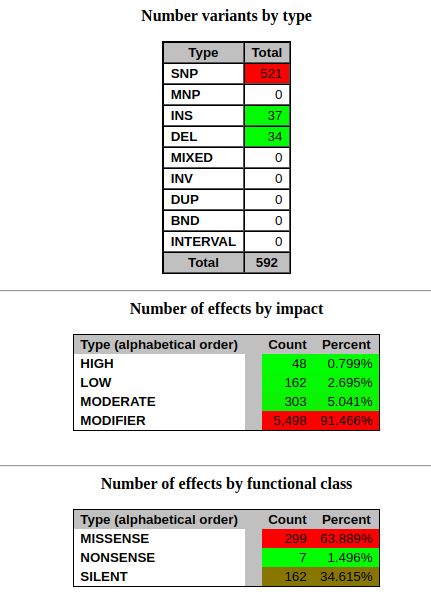
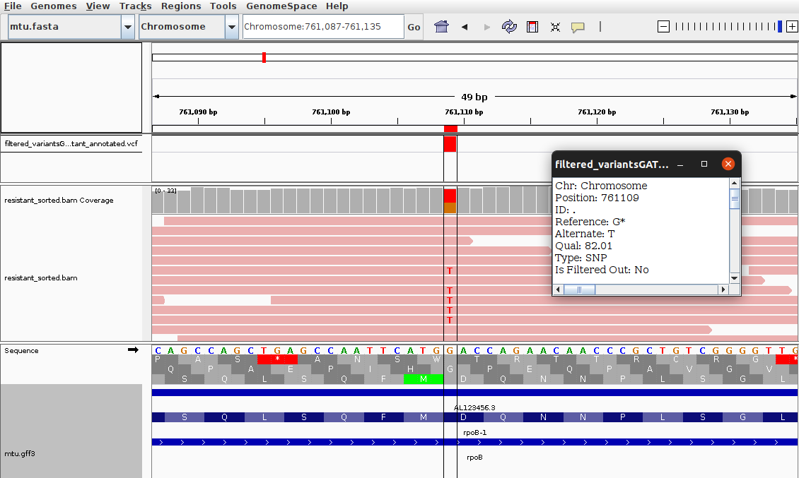

What is Whole-Genome Sequencing (WGS) using Short Reads?
Introduction to WGS Short Reads
Whole-Genome Sequencing (WGS) using short-read technology (e.g. Illumina) provides
a comprehensive, high-resolution view of the entire DNA content of an organism. Millions of short fragments
are sequenced and computationally reconstructed to reveal its genomic structure.
When a reference genome is available, this process is known as
resecuenciación: newly sequenced reads are aligned against the
reference to detect genomic differences.
This allows precise identification of:
- SNPs – single nucleotide variants
- INDELs <50bp – small insertions and deletions
- Small structural changes detectable from mapping patterns
WGS short-reads is widely used in microbial genomics, human genetics, clinical diagnostics, agriculture,
population genomics and evolutionary studies.
Step 1: Data Quality Control
Raw FASTQ files are evaluated with FastQC and summarized using
MultiQC. We detect GC biases, adapter contamination, duplicated reads, per-base quality
and other quality issues to ensure high reliability before alignment.
View FastQC Report
View MultiQC Report
Step 2: Trimming
Low-quality bases, adapters and technical artefacts are removed using tools such as
fastp or Trimmomatic. This improves alignment accuracy and reduces
false positives in variant calling.
Step 3: Alignment with BWA-MEM
High-quality reads are aligned to the reference genome using BWA-MEM, one of the most
accurate and widely used algorithms for short-read mapping.
After alignment, Picard tools are applied for:
- Sorting the BAM file
- Marking duplicates
- Collecting alignment metrics
View Alignment Metrics
Step 4: Variant Calling with GATK
Variant calling is performed using GATK HaplotypeCaller, which reconstructs local
haplotypes and identifies:
- SNPs
- Small INDELs (<50 bp)
The output is a high-confidence VCF file containing all detected genomic variants.
Download Raw Variant VCF
Step 5: Variant Filtering
Raw variants are filtered using VCFfilter to retain only high-quality calls meeting
specific thresholds, such as:
- Minimum quality (QUAL)
- Minimum read depth (DP)
- Allelic balance for heterozygous calls
This step reduces false positives and ensures a reliable final variant set.
Download Filtered VCF
Step 6: Variant Annotation with SnpEff
Variants are annotated using SnpEff, which predicts their biological effect by
overlaying them onto genomic features (genes, CDS, exons, UTRs, etc.).
SnpEff classifies variants as:
- High impact (loss-of-function, frameshift…)
- Moderate impact (missense…)
- Low impact (synonymous…)
- Modifiers (intergenic, upstream, downstream…)

View Annotation Report
Step 7: Coverage & IGV Visualization
Coverage depth is computed across the genome to evaluate sequencing uniformity and detect low-depth regions.
These metrics are shown in coverage plots that help assess data quality.
Finally, variants and alignments are visualized in IGV (Integrative Genomics Viewer),
allowing inspection of:
- Read support for each variant
- Local coverage patterns
- Potential mapping issues
- Complex regions

Download IGV Session